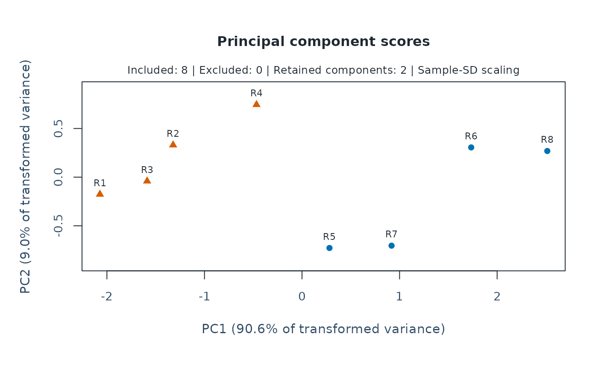
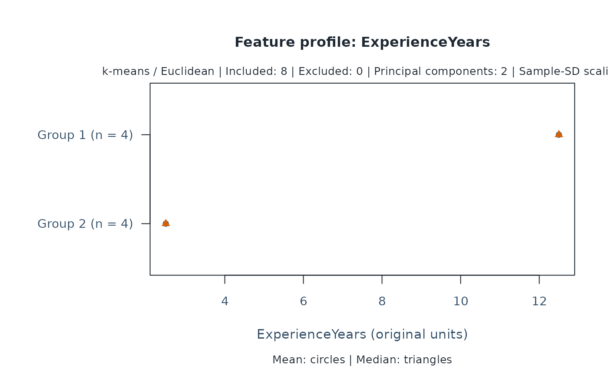

Express numeric attributes as principal components: new variables ordered by
how much variation they describe. For example, summarize rater experience,
training and workload together. Choose components when you want to retain
fewer variables; the default retains all nonzero components. PCA does not
estimate rater quality, ability or groups. Identifiers and omitted rows are
retained.
Arguments
- x
A table reviewed with
mfrm_features(). Formfrm_cluster_kmeans(), a result frommfrm_pca()is also accepted.- components
Number of leading principal components to retain.
NULLretains the numerical rank, usingsqrt(.Machine$double.eps)relative to the largest singular value. A requested count cannot exceed that rank.- scale
Divide centered numeric features by their sample standard deviations (
TRUE, default). WithFALSE, distances retain the original feature units. Numeric coding must have a meaningful Euclidean interpretation; factors, ordered factors, characters and logical features are refused.- weights
Optional named, strictly positive finite numeric vector with one weight per selected feature. Defaults to equal weights. Names, not vector order, identify features. Remove a feature to exclude it.
- missing
Either
"error"(default) or"omit". The latter excludes incomplete entities explicitly, retaining their IDs, reasons, and missing group membership in the result. No values are imputed.- ...
Reserved for method compatibility.
- object
An object returned by
mfrm_pca().
Value
An mfrm_pca object with ID-aligned scores (omitted rows are NA),
loadings, a variance table (variance, proportion, cumulative proportion
and retained status), transformation (centers, divisors and weight factors),
original feature_data and settings. summary() returns variance.
Details
Uses stats::prcomp() on centered, optionally standardized features,
multiplied by sqrt(weights / max(weights)). Thus weights apply to
squared Euclidean distances. Weight names
identify original features. Constant features, nonfinite transformations
and numerically unrepresentable variance are refused. Missingness stops by
default; explicit omission retains every excluded ID and its original reason.
PCA finds directions of feature variance, not clusters or latent MFRM abilities. All nonzero components preserve distances in the transformed feature space, within numerical precision. Retaining fewer components changes the clustering objective and can remove informative directions. High explained variance does not establish valid groups. Signs of loadings and scores are arbitrary; tied eigenvalues can also rotate their subspace. Loadings are eigenvector coefficients in the transformed feature space, not correlations in the original units.
Use the same fitted PCA to review scores, loadings and groups. Passing its
result to mfrm_cluster_kmeans() uses the retained scores without further
standardization or whitening. PCA is not a required step for k-means.
Group comparison and imputation sensitivity retain their descriptive scope.
Examples
raters <- data.frame(Rater = paste0("R", 1:8),
ExperienceYears = c(1, 2, 3, 4, 10, 12, 13, 15),
WorkshopHours = c(4, 12, 8, 20, 12, 28, 16, 32),
AnnualRatings = c(80, 120, 90, 160, 280, 350, 300, 400))
features <- mfrm_features(raters, "Rater", names(raters)[-1])
pca <- mfrm_pca(features, components = 2)
summary(pca)
#> Component Variance Proportion Cumulative Retained
#> 1 PC1 2.71834456 0.906114853 0.9061149 TRUE
#> 2 PC2 0.26968565 0.089895216 0.9960101 TRUE
#> 3 PC3 0.01196979 0.003989931 1.0000000 FALSE
pca$loadings
#> PC1 PC2
#> ExperienceYears 0.5831713 -0.5122424
#> WorkshopHours 0.5485673 0.8207647
#> AnnualRatings 0.5991537 -0.2528894
groups <- mfrm_cluster_kmeans(pca, k = 2, seed = 17, silhouette = FALSE)
plot(pca, type = "scores", groups = groups)

plot(groups, type = "profile", feature = "ExperienceYears")
